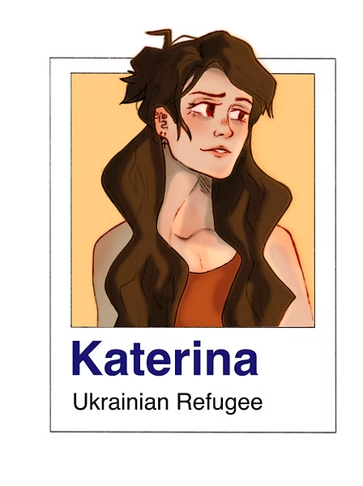
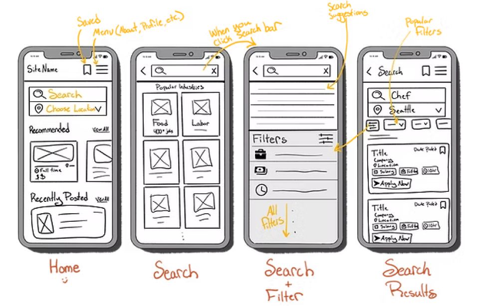
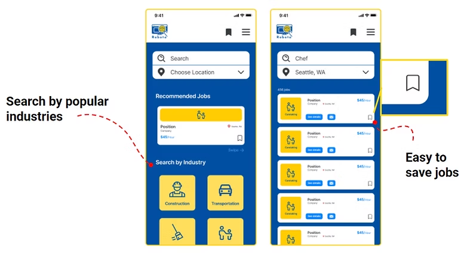
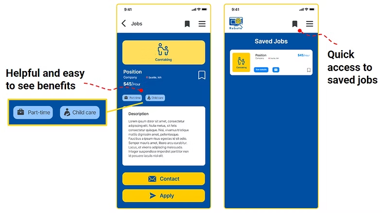
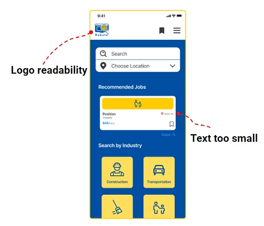

International Aid Hackathon 2022
Two UX designers and six engineers, one weekend, and a two-sided problem: refugees who needed work fast, and Washington employers who wanted to hire them. Won both the Innovation Track and Crowd Favorite.
General Assembly's 2022 International Aid Hackathon gave teams 2.5 days to build something meaningful for one of the most pressing humanitarian situations of the moment. Our team was eight people — two UX designers and six software engineers — competing against teams from across the country.
We knew we were building for the situation in Ukraine. We did not know what to build. So rather than picking a idea and defending it, we spent the first hours finding out where the need actually was — which is the decision the rest of the weekend rested on.
Two findings narrowed the problem down to something an eight-person team could actually address in a weekend.
Refugees needed a fast, accessible way to search and apply for jobs. Washington employers actively wanted to hire refugee workers. Both sides wanted the same thing and couldn't find each other.
THE PROBLEM, ONCE WE'D SCOPED ITFraming it as a two-sided match rather than a refugee services directory is what made it a product. The demand already existed on both sides; what was missing was the connection.
With 2.5 days total, research had to be narrow and fast. We ran two methods: user interviews, and a competitive task analysis.
We mapped the end-to-end flow of searching for and saving a job on Indeed — the incumbent everyone in our interviews already used. Mapping an existing product is the fastest way to get a structural baseline when you have no time to invent one from scratch.
INDEED — NINE STEPS TO SAVE ONE JOB
We interviewed six participants who were either Ukrainian refugees or had recently been through a job search. Four themes came out clearly:
FOUR THEMES, SIX INTERVIEWS
Six participants in a 2.5-day sprint is a small sample and I'd call it directional rather than conclusive. But the themes were unanimous enough to design against, and the mobile-first signal in particular turned out to be the most consequential thing we learned.
I built a proto-persona from the interviews to keep eight people making the same decisions for the same reasons under time pressure.

Katerina is 35, recently evacuated Ukraine, and now lives in Seattle. Her husband was not able to leave with her. With two kids to support and no local network, she needs full-time work as quickly as possible. She struggles to find jobs matching her skills, can't easily track what she's applied to, and needs options close to where she is.
A proto-persona built in an afternoon is not a researched persona, and I'd label it that way in any room. Its job here was narrower: settle arguments quickly. With six engineers building in parallel, "would this work for Katerina" resolved scope questions faster than debating them would have.
With the task analysis as a structural base, I mapped our own user flow, then sketched the screens it implied: a home screen, a search screen, search with filters, and results.
ROBOTA — SEARCH AND FILTER COLLAPSED INTO ONE PASS, NO RETURN TRIP

Mobile-first wasn't a preference. Our users had more consistent access to smartphones than to computers, so the phone was the only device we could count on.
THE EARLIEST DECISION, AND THE ONE THAT SHAPED EVERYTHING AFTERFrom sketches into mid-fidelity, then straight to high fidelity for the two features the research pointed at hardest.


Rather than requiring someone to know exactly what to type, we surfaced the top industries actively hiring Ukrainian refugees directly on the home screen. A blank search field assumes you already know the word for the job you want — in your second language. Tiles don't make that assumption.
Tracking applications came up in interview after interview. We made saving a single tap from any listing, so someone can build a shortlist without breaking out of their search.
Time and engineering constraints meant one usability session on the high-fidelity wireframes. We asked the participant to search for chef jobs in Seattle, find details about a role, save it, and navigate to their saved jobs.

Text in several areas of the app, including the logo, was too small to read comfortably.
THE ONE TEST WE HAD TIME FOR — AND IT FOUND THE RIGHT THINGThis mattered more than a generic accessibility note would. Many Ukrainian refugees arriving in the US are older adults. Small text isn't a minor polish issue for that audience, it's a barrier to the core task. We flagged it as a priority fix ahead of any further development.
One session is one session, and I wouldn't claim it validated the design. What it did was catch a failure that a room full of twenty-somethings designing on retina screens had not noticed — which is the entire argument for testing with anyone at all, even once, even at hour 50 of a 60-hour sprint.
Given more time and resources, the team identified three directions:
The live build is no longer hosted. Robota was a hackathon project on temporary infrastructure, and the deployment has since lapsed — the screens on this page are the record of what was built.
Scoping was the design work. The strongest decision of the weekend wasn't a screen, it was refusing to start with an idea. Two research findings — Washington state, and employment rather than housing — turned "help Ukrainian refugees" into a problem eight people could actually finish. Everything after that was execution.
Constraints made research better, not worse. With 2.5 days I couldn't run a study, so I ran six interviews and mapped a competitor. Neither is rigorous on its own. Together they gave enough structure to design against, and mapping Indeed in particular meant I wasn't inventing a flow from nothing while a clock ran.
One test beat zero tests by a wide margin. The accessibility finding is the thing I'd point to in an interview. We nearly cut testing for time. Had we cut it, we'd have shipped a demo that our actual users — many of them older adults — would have struggled to read, and we'd have won the same awards without ever knowing.
What I'd do differently: I'd have pushed for one interview participant over 50 during research rather than discovering the legibility problem at the end. The persona said Katerina was 35 because our participants skewed young, and that assumption propagated all the way into type sizes. The test caught it. Research should have.